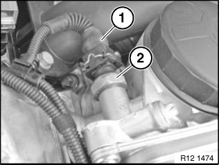
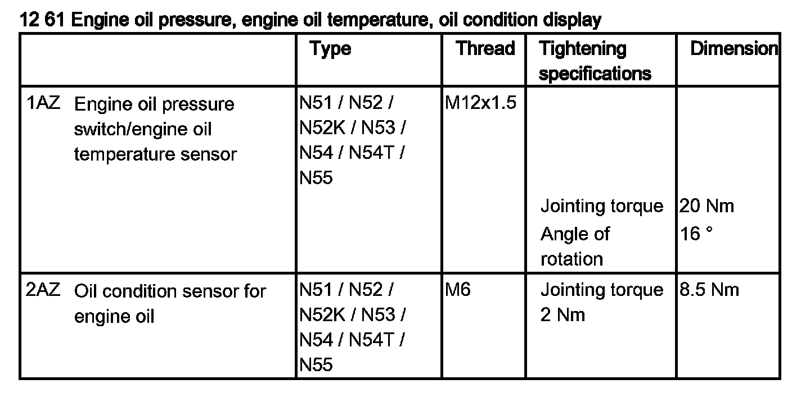
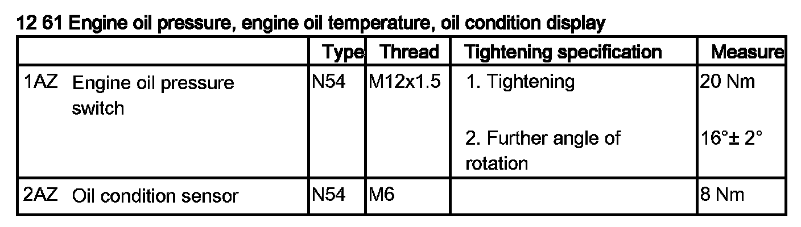
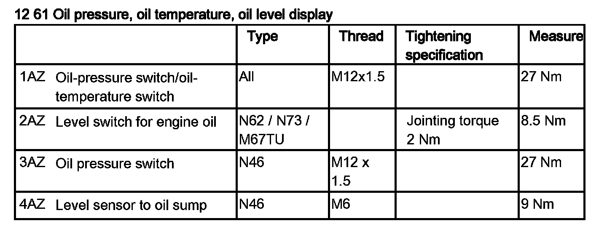

Oil Pressure Sensor: Service and Repair
12 61 280 Removing And Installing/replacing Oil Pressure Sensor (N52, N52K, N51, N54, N53)

Necessary preliminary tasks:
- Turn off ignition
- N52, N52K, N51, N53 only:
- Remove ignition coil cover
- N54 only:
- Remove intake silencer housing

WARNING:
Scalding hazard.
Only perform this task on an engine that has cooled down.

Installation location:
Oil filter housing, front left.
Engine oil may emerge when oil pressure sensor is replaced; have a cleaning cloth ready.

Unlock plug (1) and remove.
Release oil pressure sensor (2).
Tightening torque 12 61 1AZ.
Installation:
Check engine oil level, top up engine oil if necessary.


